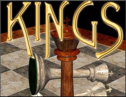

Hacked by Snow
http://www.amina.com/war/mines/
Please take a moment to look.
Do these look like terrorists?
Rebels?
Do something.
Oh yeah, before I forget.
Special note to VSO Inc.
FuQ
Snow gives huge hugs to:
Mad Cracker
YT Cracker
co0kie
Cinda
Madfriend
The PHC
Keebler
ALKQN
And a personal word to the kid on the river walk:
You are not a hacker. Please stop using l33t at school.
People that suck:
VSO Inc.
Russian Govt
Indian Govt
DSK Kiddies
Tre Gangster Crips
RIS
The Ed0phile
Detective Rowe
And co0kies evil cat
P.S. Rename oldindex.htm to index.htm to fix your site
I do honestly apologize for this outrage.
It would be pointless to try to track me down
and cost much more then the 10 seconds of work
you will need to do to rename the file.
Please understand that I use this as a means of
getting a political message out
And I have patched the hole that I used to gain
entry to your system in return for the headache.
I did not view, or damage any of your data
And the only other data that I have edited
was your log file. You understand why.
Oh, and btw, this is the sloppiest HTML I have ever done.
-Snow